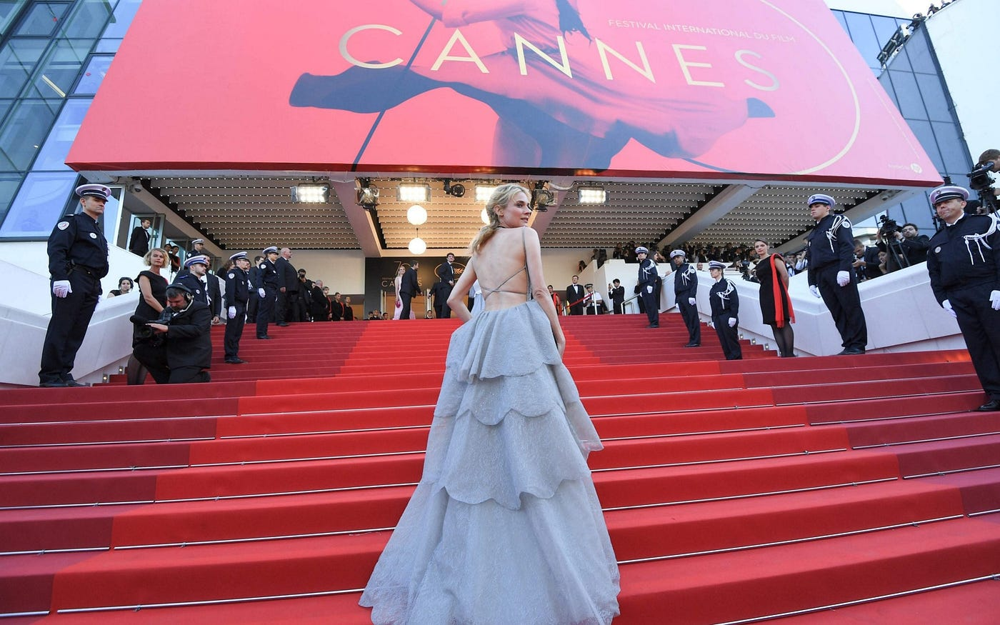
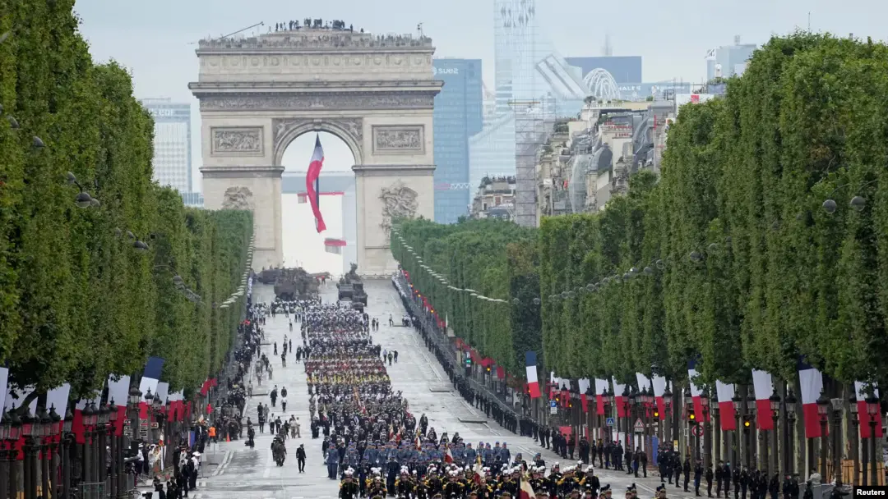
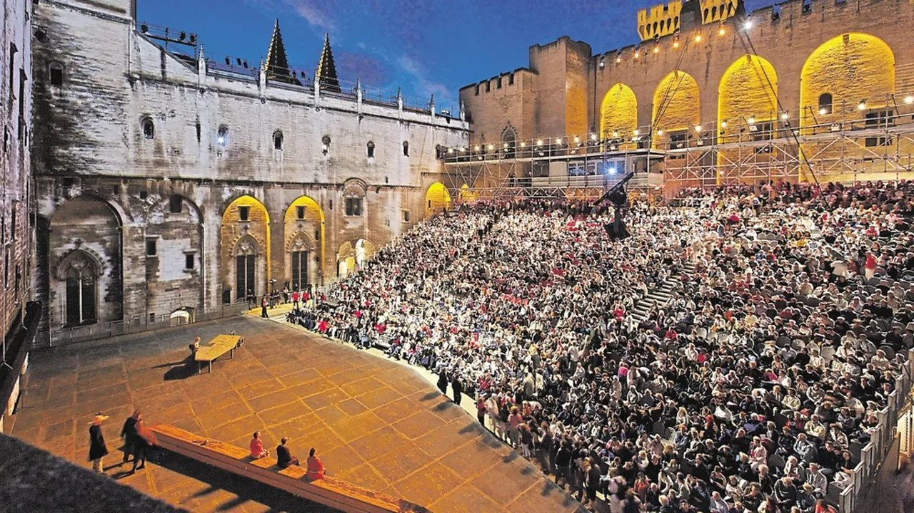
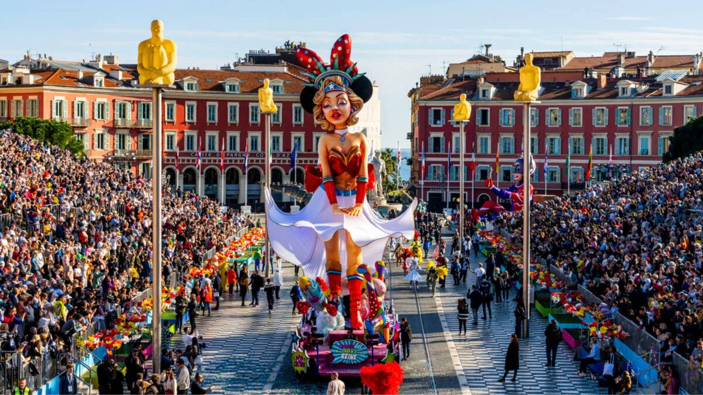
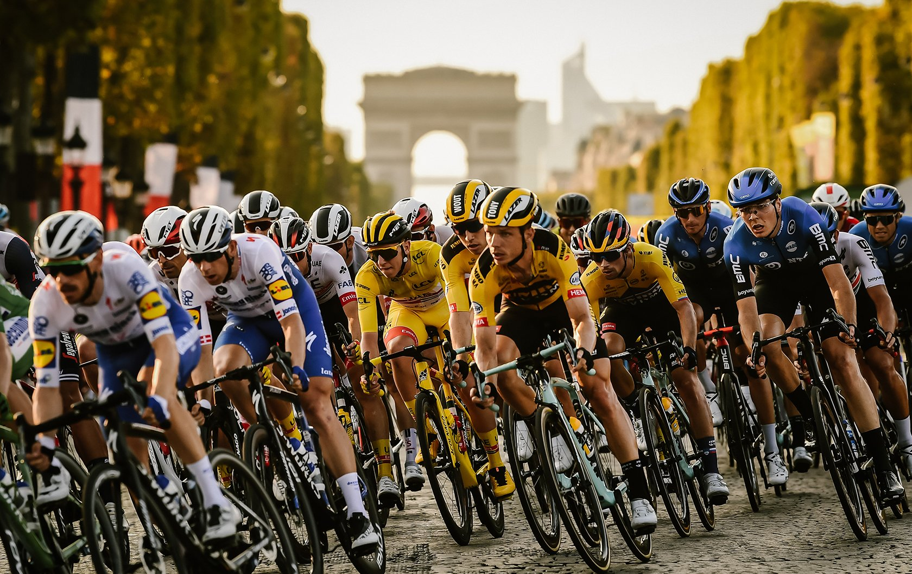

France's Most Renowned Festivals
Cannes Film Festival
The Cannes Film Festival, held annually in May in the city of Cannes, is one of the most prestigious and publicized film festivals in the world.
Established in 1946, it showcases new films of all genres, including documentaries, from around the globe.
The festival is famous for its red carpet events, glamorous parties, and the coveted Palme d'Or award given to the best film.
It attracts top filmmakers, actors, and industry professionals, making it a significant event in the international film calendar.

Bastille Day
Bastille Day, celebrated on July 14th, is France's National Day, commemorating the French Revolution and the storming of the Bastille prison in 1789.
The day is marked by grand military parades along the Champs-Élysées in Paris, fireworks, parties, and communal meals throughout the country.
It symbolizes French unity, liberty, and patriotism, with citizens participating in various festivities to honor their nation's history and values.

Festival d'Avignon
The Festival d’Avignon, held every July, turns the historic city into a theater lover’s dream.
Performances take place in grand venues like the Palais des Papes, as well as lively streets and courtyards.
Expect a mix of classic plays, modern shows, and experimental performances. Street artists and open-air performances add to the vibrant atmosphere.
For visitors, it’s a chance to experience world-class theater in a unique historic setting.

Nice Carnival
Each February, Nice explodes with color during its famous carnival. Elaborate floats parade through the streets, dancers perform in dazzling costumes, and flower battles delight crowds.
The festival blends centuries-old traditions with modern fun, attracting visitors from around the world.
Music, laughter, and lively parades create an unforgettable atmosphere. Walking along the Promenade des Anglais during carnival is a feast for the senses.

Tour de France
The Tour de France is more than a race—it’s a moving festival across France. Every July, cyclists tackle mountains, coastlines, and scenic countryside, drawing cheering crowds everywhere.
Spectators line the route, enjoying local food, music, and celebration along the way. The battle for the yellow jersey adds excitement, while the stunning French landscapes make it a visual treat.
Even as a spectator, it’s an iconic way to experience French culture and scenery.
